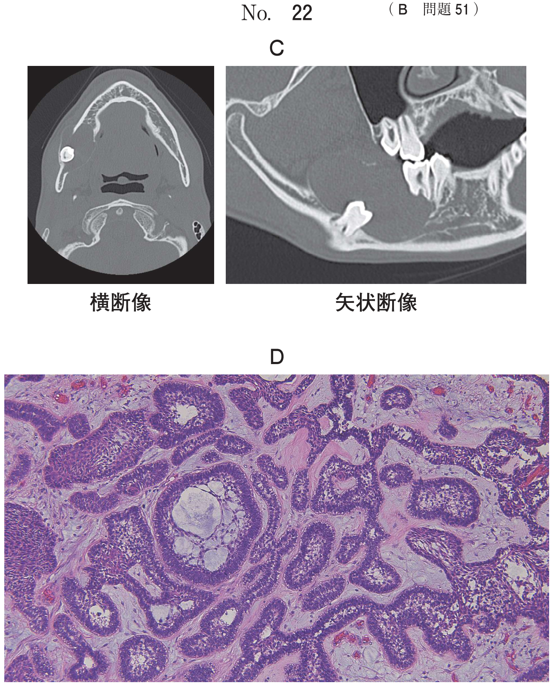

歯根尖切除術
歯根尖切除法と逆根管充填法
| 術式 | 内容 |
|---|---|
| 歯根尖切除法 | 根尖部を切除、根管充填はそのまま |
| 逆根管充填法 | 根尖切除後、逆根管窩洞を形成して充填 |
根尖部を切除する目的
切除の目的（頻出）
- 副根管内の感染源を除去する
- 肉芽組織の掻爬を容易にする
※ 骨の削除量減少、歯肉弁形成容易化、逆根管窩洞の切削量減少は目的ではない
適応症
- 通常の根管治療により治癒が得られない、あるいは不可能な歯
- 歯根の弯曲・狭窄、器具の破折、深い支台築造などで根管経由の治療が不可能
- 根尖部に根管の分岐や側枝が存在（感染源の完全除去が望めない）
- 根管拡大後も持続的な排膿がある
- 根尖部に限局した歯根破折
- 根尖孔から突出した破折器具
- 根尖部根管側壁の穿孔
- 大きな歯根嚢胞
適応にならないもの
- 根管中央部の内部吸収：歯根尖切除では対応不可
- 根尖部のガッタパーチャポイント残留：再根管治療で対応可能
禁忌症
- 上顎洞やオトガイ孔に近接
- 大臼歯など根尖部への到達が困難
- 歯根が短い、歯周病進行（歯冠・歯根比が不良になる）
使用器具・材料
| 用途 | 器具・材料 |
|---|---|
| 根尖切断 | ダイヤモンドポイント |
| 逆根管窩洞形成 | レトロチップ（超音波装置に装着） |
| 逆根管充填材 | MTAセメント、EBAセメント（強化型酸化亜鉛ユージノールセメント） |
術式のポイント
- 歯根切断面のベベルは10°以下が望ましい（顕微鏡使用で0°も可能）
- 逆根管充填窩洞の深さは3mmを基準
過去問
109A93
歯根尖切除法で根尖部を切除する目的はどれか。2つ選べ。
a 骨の削除量を減少させる。
b 歯肉弁の形成を容易にする。
c 副根管内の感染源を除去する。
d 肉芽組織の掻爬を容易にする。
e 逆根管充填窩洞の切削量を減少させる。
b 歯肉弁の形成を容易にする。
c 副根管内の感染源を除去する。
d 肉芽組織の掻爬を容易にする。
e 逆根管充填窩洞の切削量を減少させる。
正解：c, d
【解説】根尖部には副根管（側枝）が多く存在し、通常の根管治療では感染源を完全に除去できないことがある。根尖部を切除することで副根管内の感染源を除去し、また肉芽組織の掻爬を容易にする。
116A40
根管治療時の所見で歯根尖切除の適応になるのはどれか。3つ選べ。
a 根管中央部に内部吸収がある。
b 根管拡大後も持続的な排膿がある。
c 根尖部に限局した歯根破折がある。
d 根尖孔から突出した破折器具がある。
e 根尖部根管壁にガッタパーチャポイントの残留がある。
b 根管拡大後も持続的な排膿がある。
c 根尖部に限局した歯根破折がある。
d 根尖孔から突出した破折器具がある。
e 根尖部根管壁にガッタパーチャポイントの残留がある。
正解：b, c, d
【解説】持続的な排膿、根尖部限局の歯根破折、根尖孔から突出した破折器具は歯根尖切除の適応。根管中央部の内部吸収は歯根尖切除では対応できない。ガッタパーチャの残留は再根管治療で除去可能。
116A76
上顎左側第一小臼歯の歯根尖切除時の口腔内写真（別冊No.27）を別に示す。
矢印に示す窩洞形成を行うのに使用した器具はどれか。1つ選べ。

a ラウンドバー
b レトロチップ
c カーバイドバー
d ゲーツグリッデンドリル
e スプーンエキスカベーター
b レトロチップ
c カーバイドバー
d ゲーツグリッデンドリル
e スプーンエキスカベーター
正解：b
【解説】逆根管充填窩洞の形成にはレトロチップ（超音波装置に装着する専用チップ）を使用する。根管方向に追従した窩洞形成が可能で、従来のラウンドバーより精密な形成ができる。
115B80
53歳の女性。上顎左側前歯部の歯肉腫脹を主訴として来院した。1か月前から歯肉が腫れてきたという。└12に自発痛はないが、打診痛と根尖部歯肉の圧痛がある。診察の結果、└12に歯根尖切除術を行うこととした。初診時のエックス線写真（別冊No.31A）と術中の口腔内写真（別冊No.31B）を別に示す。
この手術に用いるのはどれか。3つ選べ。


a 歯周包帯
b 骨膜剥離子
c レトロチップ
d EBAセメント
e ダイヤモンドポイント
b 骨膜剥離子
c レトロチップ
d EBAセメント
e ダイヤモンドポイント
正解：c, d, e
【解説】歯根尖切除術に使用する器具・材料：ダイヤモンドポイント（根尖切断）、レトロチップ（逆根管窩洞形成）、EBAセメント（逆根管充填材）。骨膜剥離子は粘膜骨膜弁の剥離に使用するが、歯根尖切除術の主要器具ではない。